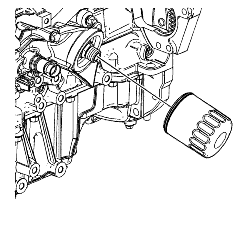
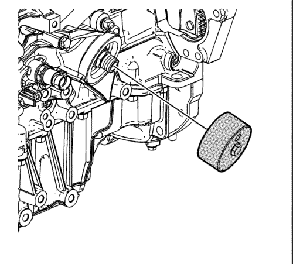
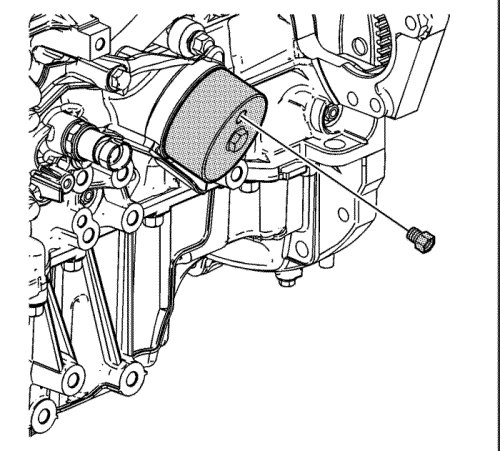
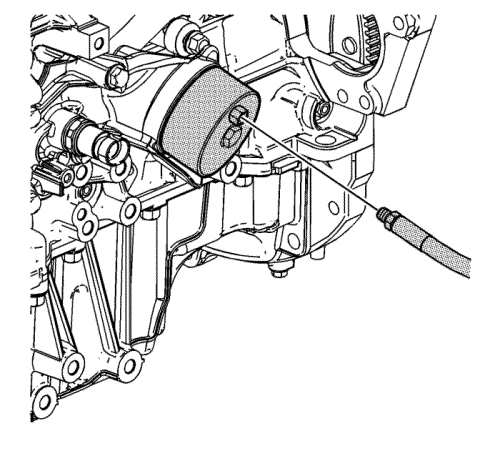

Diagnóstico y comprobación de la presión de aceite
Herramientas especiales
| • | EN-47971 Adaptador de manómetro de presión de aceite |
| • | CH 48027 Indicador de presión |
Si desea informarse sobre herramientas regionales equivalentes, consultar Herramientas especiales .
- Con el vehículo sobre una superficie nivelada, deje el vehículo con el motor en marcha durante unos minutos, deje pasar un tiempo de purga suficiente (2 a 3 minutos) y mida el nivel de aceite.
- Si es necesario, añada el aceite de motor de graduación recomendada y llene la carcasa del cigüeñal hasta que el nivel de aceite llegue hasta el indicador máximo de nivel de aceite.
- Ponga en marcha el motor un instante (10-15 segundos) y compruebe en el medidor o el indicador que no hay presión de aceite en el vehículo o es baja.
- Escuche cualquier ruido de golpeteo o ruido del tren de válvulas.
- Compruebe lo siguiente:
| • | Aceite diluido en agua o anticongelante de glicol |

- Retire el filtro de aceite.

Atención: Se debe utilizar una herramienta especial nueva EN 47971. Debido al tamaño especial y al paso de rosca del montaje del adaptador del filtro de aceite, asegúrese de utilizar la herramienta adecuada o podría provocar daños en el componente.
- Monte el adaptador EN-47971 en el adaptador del filtro de aceite.

- Ensamble el montaje 1/8 NPT del manómetro CH 48027 en el puerto del adaptador EN-47971.

- Monte el tubo flexible del manómetro CH 48027 en el adaptador EN-47971.
- Ponga en marcha el motor y mida la presión de aceite del motor.
- Compare las lecturas con Especificaciones mecánicas del motor : LF1 .
- Si la presión de aceite del motor está por debajo de los valores especificados, compruebe que no se presenta ninguna de las siguientes circunstancias en el motor:
| • | Conductos de reparto de aceite agrietados, con poros u obstruidos. |
Atención: Este motor utiliza un filtro de aceite especial de alto rendimiento. El uso de cualquier otro filtro podría ocasionar su avería y/o daños graves en el motor.
- Si el valor de presión de aceite del manómetro CH 48027, o equivalente, está dentro del margen especificado, compruebe si se dan las siguientes condiciones:
| © Copyright Chevrolet Europe. All rights reserved |